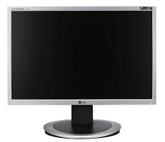

จอภาพ (mornitor)
หรือชื่ออื่นเช่น จอคอมพิวเตอร์ จอคอม จอมอนิเตอร์ มอนิเตอร์ จอแสดงผล จอภาพแสดงผล จอภาพแสดงผลคอมพิวเตอร์ จอทีวี จอโทรทัศน์ ฯลฯ คือส่วนหนึ่งของเครื่องใช้ไฟฟ้าที่แสดงรูปภาพให้เห็นจากอุปกรณ์ที่สามารถส่งออกวิดีโอ เช่นคอมพิวเตอร์หรือโทรทัศน์ ซึ่งรูปภาพที่ปรากฏสามารถเปลี่ยนแปลงไปได้และไม่คงอยู่อย่างถาวร จอภาพประกอบด้วยส่วนอุปกรณ์ที่แสดงผลให้เห็น และวงจรอิเล็กทรอนิกส์ภายในที่สร้างรูปภาพจากสัญญาณวิดีโอ อุปกรณ์ที่แสดงผลยุคใหม่จะเป็นจอภาพผลึกเหลวทรานซิสเตอร์แผ่นบาง และจอภาพยุคก่อนเป็นหลอดภาพรังสีแคโทด